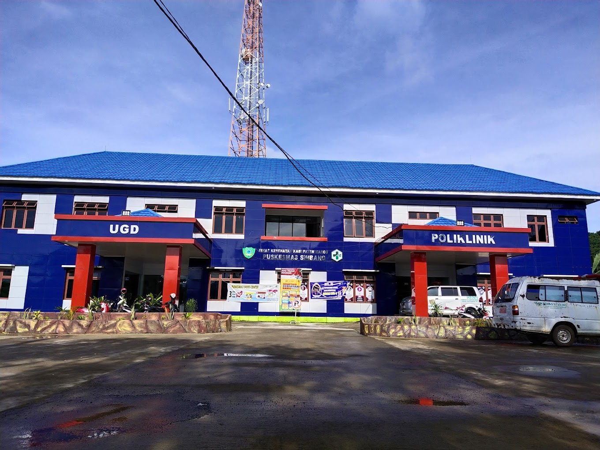

Mengenal Lebih Dekat
Profil Puskesmas


Profil Puskesmas
Simbang
Menjadi ujung tombak pelayanan kesehatan dasar di masyarakat. Kami berkomitmen memberikan layanan kesehatan prima yang terintegrasi, inovatif, dan berpusat pada keselamatan pasien.
Dipercaya oleh lebih dari 30.000+ warga.


Kepala Puskesmas
Bdn. Verawati Idris, S.Tr.Keb